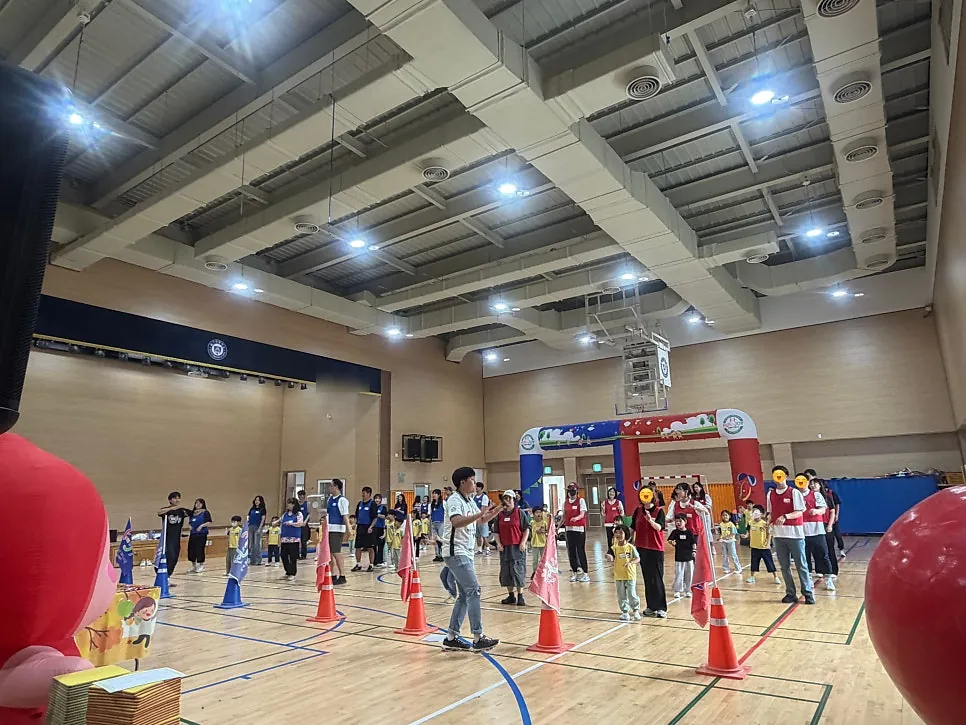
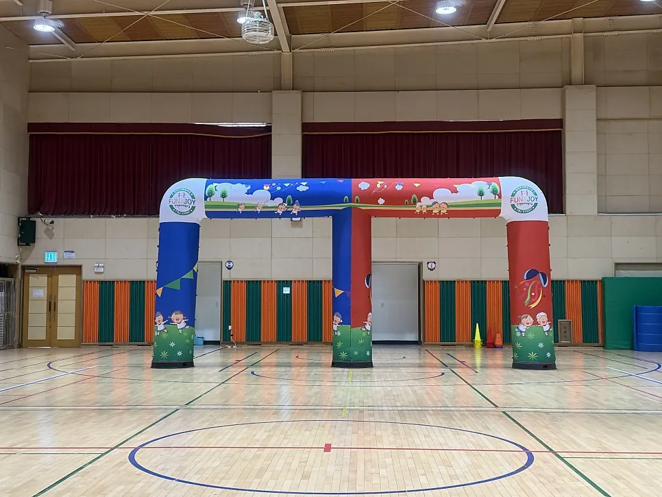

안산 행사 준비 · 2026년 11월 8일
안산 유치원 가을 운동회 준비 — 실내 · 종목 · 세팅 · 안전
안산 유치원 가을 운동회 준비는 종목보다 장소를 먼저 정하는 것이 순서입니다. 가을 바람이 선선해도 낮 햇빛은 아직 뜨거울 수 있어서, 아이들과 보호자가 오래 머무는 운동회는 실내 진행이 마음 편한 경우가 있습니다. F&J 이벤트(펀앤조이 체육교실)는 안산 병설유치원 가을 운동회를 실내에서 진행한 기록이 있고, 이 글은 그 흐름을 바탕으로 장소, 종목, 입구 세팅, 준비체조, 안전 점검까지 한 번에 확인하도록 정리했습니다.

- 운동회 준비는 날짜 다음에 장소(실내 · 야외)부터 정하고, 날씨 걱정이 있으면 실내 대체안을 함께 잡아 둡니다.
- 종목은 아이들 나이와 인원, 바닥 넓이에 맞춰 고르고 보호자가 함께하는 순서를 하나 넣으면 분위기가 좋아집니다.
- 입구 아치와 스피커 같은 세팅은 행사 전에 끝내고, 게임 구역 주변에 걸리는 물건이 없는지 한 바퀴 돕니다.
- 준비체조는 아이와 보호자가 함께 하면 다치는 일이 줄어듭니다.
- F&J 이벤트는 본사가 화성시 비봉면에 있어 경기 남부 출장으로 안산까지 갑니다.
1. 안산 유치원 가을 운동회 준비는 장소부터 정합니다
운동회 날짜가 정해지면 가장 먼저 실내로 할지 야외로 할지를 정합니다. 가을이라 해도 햇빛이 센 날이 있고, 바람이 선선해 보여도 아이들은 금방 땀을 흘립니다. 안산 병설유치원 가을 운동회는 바깥 바람은 선선했지만 햇빛이 아직 뜨거워서 아이들이 덥지 않도록 실내 진행으로 열었습니다. 부모님이 함께 오는 행사라면 어른들이 앉아 있을 자리까지 따져서 실내를 고르는 쪽이 편합니다.
야외가 나쁘다는 뜻은 아닙니다. 운동장이 넓으면 달리기 종목을 크게 짤 수 있습니다. 다만 야외로 정했다면 비나 더위에 대비한 실내 대체 장소와 프로그램을 같이 정해 두세요. F&J 이벤트도 날씨 걱정이 있는 행사는 실내 대체안을 미리 정해 두고 준비합니다.
| 구분 | 좋은 점 | 미리 볼 것 |
|---|---|---|
| 실내(강당 · 체육관) | 더위 · 비 걱정이 적고 소리가 잘 모입니다 | 바닥이 미끄럽지 않은지, 천장 높이, 출입구 수 |
| 야외(운동장) | 달리기 종목을 넓게 쓸 수 있습니다 | 그늘 · 물 마실 곳, 우천 대체 장소 |
| 두 곳 모두 가능 | 그날 날씨를 보고 정할 수 있습니다 | 어느 쪽이든 같은 순서로 돌아가게 종목을 짭니다 |
2. 종목은 나이 · 인원 · 바닥 넓이로 고릅니다
종목을 고를 때는 인기 있는 게임을 늘어놓기보다 아이들이 규칙을 몇 번 듣고 바로 할 수 있는지를 봅니다. 병설유치원 가을 운동회에서는 청팀 · 홍팀으로 나눠 다음과 같은 종목을 썼습니다.
- 날아라 볼풀 공 — 가운데에 길게 늘인 천 위로 볼풀 공을 던져서 상대 팀 쪽으로 많이 넘기는 대결입니다. 공을 행운이라고 생각하고 넘겨 주는 팀이 이기는 식이라 아이들이 웃으며 합니다.
- 박 터트리기 — 청팀 · 홍팀 박을 향해 볼풀 공을 던져 먼저 터뜨리는 팀이 이깁니다. 공이 말랑해서 맞아도 아프지 않습니다.
- 깃발 꽂기 — 팀 색깔에 맞는 깃발을 판에 꽂고 상대 팀 깃발은 뽑는 게임입니다. 나이가 어리면 규칙을 쉽게 바꿔서 진행합니다.
- 색판 뒤집기 — 색판을 미션에 맞춰 뒤집습니다. 아이들이 먼저 하고, 보호자는 더 어려운 미션이나 색판 쌓기 대결로 이어 가면 가족이 함께하는 순서가 됩니다.
보호자가 참여하는 행사라면 종목 한두 개는 아이 먼저, 보호자 다음 순서로 짜 보세요. 아이들이 시범을 보이고 어른들이 따라 하는 구조가 되어 분위기가 부드럽습니다.

3. 입구 아치와 스피커, 행사 전에 끝내 두는 세팅
운동회의 첫인상은 입구에서 정해집니다. 캐릭터 아치와 개선문을 세우면 아이들이 올림픽 입장처럼 손을 흔들며 들어오고, 보호자는 그 앞에서 가족사진을 찍습니다. 평소에는 온 가족이 사진 찍을 기회가 적으니 아치 앞을 사진 자리로 비워 두면 좋습니다.
아치, 스피커, 마이크 같은 세팅은 행사 시작 전에 끝내 두는 것이 원칙입니다. 세팅이 끝난 뒤에는 게임 구역 주변을 한 바퀴 돌며 걸려 넘어질 물건이나 튀어나온 모서리가 없는지 확인합니다. 즐거운 날 다치면 안 되니까요.

4. 준비체조는 아이와 보호자가 함께
운동회 시작 직후에는 반드시 준비체조를 합니다. 갑자기 몸을 움직이면 평소 안 쓰던 근육이 놀라 다칠 수 있기 때문입니다. 안산 병설유치원 가을 운동회에서는 아이들이 유치원에서 미리 연습해 온 율동으로 준비체조를 했고, 보호자들도 적극적으로 따라 했습니다. 아이들이 앞에서 시범을 보이고 어른이 따라 하는 구조라서 어색함이 빨리 풀렸습니다.
5. 운동회 당일 안전 점검표
아래 표를 인쇄해서 담당 선생님이 시작 전에 체크해 보세요. 항목은 일반적인 확인 사항이며, 장소 사정에 맞게 더하면 됩니다.
| 확인 항목 | 볼 것 | 시점 |
|---|---|---|
| 바닥 | 물기 · 미끄러움, 매트 위치 | 시작 전 |
| 반환점 라바콘 | 앞뒤 간격, 아이들이 부딪히지 않는 거리 | 게임별 세팅 뒤 |
| 던지기 게임 | 공이 말랑한지, 던지는 방향이 사람 쪽이 아닌지 | 게임 시작 전 규칙 설명 때 |
| 스피커 · 마이크 | 전선이 걸리는 길에 없는지 | 세팅 직후 |
| 보호자 자리 | 게임 구역 바깥, 아이가 보이는 쪽 | 시작 전 |
| 쉬는 시간 | 물 마시는 시간, 화장실 안내 | 종목 사이 |
6. 안산 운동회, 이렇게 준비를 맡겨 보세요
직접 준비하는 일과 업체에 맡길 일을 나눠 두면 부담이 줄어듭니다. 선생님들은 아이들 연습과 안내문에 집중하고, 아치 세팅 · 음향 · 종목 진행처럼 장비와 진행이 필요한 부분을 맡기는 식입니다. F&J 이벤트는 본사가 화성시 비봉면에 있어 경기 남부 출장으로 안산까지 갑니다. 날짜, 장소, 대략의 인원만 알려 주시면 아이들 나이에 맞춰 종목을 제안하고 구성과 비용을 정리해 드립니다. 자세한 문의는 견적 문의 에서, 장비와 서비스는 행사 · 대여 에서 볼 수 있습니다.
비슷한 준비 과정은 가족운동회 입구 아치 · 세팅 이야기 글에서도 볼 수 있습니다.
자주 묻는 질문
날씨가 걱정되는 가을 운동회는 어떻게 준비하나요?
야외로 정하더라도 실내 대체 장소와 프로그램을 미리 정해 두고 준비합니다. 상담 때 날씨 걱정이 있다고 먼저 말씀해 주세요.
운동회 종목은 정해 주시나요?
아이들 나이와 인원, 운동장이나 강당 크기에 맞춰 종목을 제안합니다. 원하는 게임이 있으면 반영합니다.
보호자도 함께하는 종목을 넣을 수 있나요?
네. 아이들이 먼저 하고 보호자가 이어서 하는 식으로 짤 수 있습니다. 부모님 참여 여부를 상담 때 알려 주세요.